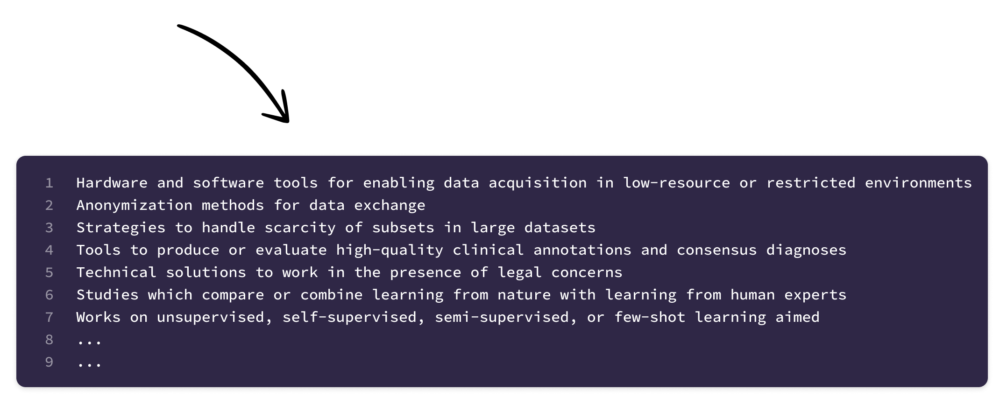

Workshop for IJCAI–ECAI 2022
July 23-25, 2022 in Vienna
Scarce Data in Artificial Intelligence for Healthcare
(SDAIH)
Submit your paper now ▶
Workshop for IJCAI–ECAI 2022
July 23-25, 2022 in Vienna
Scarce Data in Artificial Intelligence for Healthcare
(SDAIH)
Submit your paper now ▶
About
AI has the potential to generate a revolution in the field of healthcare by enabling accurate,
fast and reliable analyses of data at an unprecedented scale both in the clinics and in industry.
Leveraged properly, AI can thus allow to better meet patient needs by developing new medical
devices, drugs, and personalized treatments, while simultaneously freeing up time for clinical
staff to nourish the profound human connection between caregivers and patients. Moreover,
AI promises to democratize the healthcare system by spreading basic services to low-income or
remote areas through telemedicine.
The goal of this workshop is to exchange learnings and efforts on how to solve the issue of
data scarcity for the practical deployment of AI in healthcare. We aim at bringing together,
from both academia and industry, researchers and data scientists that are confronted with challenges
related to limited data availability for machine learning in medicine, medical engineering,
biotechnology, pharmaceuticals, and medical services.
Call for papers
Submission
We welcome the submission of original research reports within the
topics of interest of the
workshop. The maximum length of papers is fixed to 6 pages including references. We
especially
encourage the contribution of case studies, work in progress, position papers, and critical
analyses of failed projects.
Note on proceedings publication We are in contact with multiple publishers to find the
most suitable option for a proceedings volume, and with potential sponsors to fund open access
publication of all accepted papers. This will also determine the details concerning format
requirements.
Paper submission deadline: May 13, 2022
Decision notification: June 3, 2022
Camera-ready submission: June 17, 2022
Topics of interest
Topics of interest include, but are not limited to:
Schedule
Schedule follows soon
Organising committee